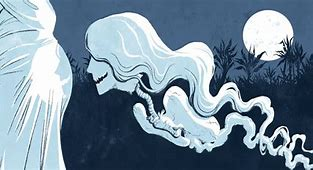

Leyendas de la China Meridional
Las leyendas chinas son una ventana hacia un mundo rico en mitología, tradiciones y sabiduría ancestral. Desde los tiempos antiguos hasta la era moderna, estas historias han cautivado a personas de todo el mundo con sus intrigantes relatos y personajes inolvidables. En las vastas tierras de China, las leyendas están tejidas con hilos de historia, cultura y filosofía. Desde las epopeyas de héroes legendarios como Hou Yi, el arquero que derribó nueve soles, hasta las emocionantes historias de amor como la de la mariposa y el espada, las leyendas chinas abarcan una amplia gama de temas, desde lo heroico hasta lo romántico, lo místico y lo moral. A través de estas narrativas, se transmiten valores fundamentales como el respeto por los ancianos, la importancia de la virtud y la perseverancia en la adversidad. Además, las leyendas chinas están impregnadas de simbolismo, reflejando la cosmovisión única de una de las civilizaciones más antiguas del mundo. En la era moderna, estas leyendas continúan siendo relevantes, adaptándose a los cambios sociales y tecnológicos. Ya sea a través de la literatura, el cine, la televisión o el arte, las historias clásicas de China siguen fascinando y cautivando a audiencias de todas las edades, recordándonos la eterna fascinación que ejerce el poder de la imaginación humana.

Leyendas Japonesas
Las leyendas japonesas son una ventana fascinante hacia el rico folclore y la mitología del país del sol naciente. A lo largo de los siglos, Japón ha cultivado una rica tradición de cuentos, mitos y supersticiones que han dado forma a su cultura y han cautivado la imaginación de personas en todo el mundo. Desde espíritus y monstruos hasta héroes y dioses, las leyendas japonesas exploran una amplia gama de temas, desde lo sobrenatural hasta lo humano. Estas historias se transmiten oralmente de generación en generación y se han convertido en parte integral del tejido cultural de Japón. La mitología japonesa está llena de kami, que son espíritus o deidades que habitan en la naturaleza, así como yokai, seres sobrenaturales que pueden ser tanto benevolentes como malévolos. Algunas de las criaturas más conocidas incluyen al oni, demonios gigantes con cuernos y piel roja, y al kappa, criaturas acuáticas con una apariencia similar a la de una tortuga. Además de los seres sobrenaturales, las leyendas japonesas también exploran temas como el amor, el honor, la venganza y el sacrificio. Muchas de estas historias están arraigadas en la historia y la geografía de Japón, reflejando la conexión profunda que el pueblo japonés tiene con su tierra y su pasado. Las leyendas japonesas no solo entretienen, sino que también enseñan lecciones morales y transmiten valores culturales. A través de estas historias, se transmiten importantes enseñanzas sobre el respeto por la naturaleza, la importancia de la familia y la comunidad, y la lucha entre el bien y el mal.

Leyendas de Miedo Coreanas
Las leyendas coreanas de terror, profundamente arraigadas en la rica tradición cultural del país, son fascinantes relatos que han sido transmitidos de generación en generación. Estas historias, a menudo envueltas en misterio y oscuridad, exploran temas universales como el bien y el mal, la vida y la muerte, y la naturaleza del más allá. Desde antiguos espíritus hasta fantasmas vengativos, las leyendas coreanas de terror ofrecen una visión única de los temores y las creencias arraigadas en la psique colectiva de la sociedad. La introducción de una colección de leyendas coreanas de terror podría destacar la riqueza cultural del país y la profundidad de su folklore, así como la capacidad de estas historias para cautivar y aterrorizar a los lectores con sus narrativas cargadas de suspense y elementos sobrenaturales. Además, podría mencionar cómo estas leyendas han perdurado a lo largo del tiempo, adaptándose y evolucionando con el paso de los años, pero manteniendo su poder para evocar emociones intensas y despertar el interés por lo desconocido y lo inexplicable

Leyendas de Miedo Tailandesas
Las leyendas coreanas de terror, profundamente arraigadas en la rica tradición cultural del país, son fascinantes relatos que han sido transmitidos de generación en generación. Estas historias, a menudo envueltas en misterio y oscuridad, exploran temas universales como el bien y el mal, la vida y la muerte, y la naturaleza del más allá. Desde antiguos espíritus hasta fantasmas vengativos, las leyendas coreanas de terror ofrecen una visión única de los temores y las creencias arraigadas en la psique colectiva de la sociedad. La introducción de una colección de leyendas coreanas de terror podría destacar la riqueza cultural del país y la profundidad de su folklore, así como la capacidad de estas historias para cautivar y aterrorizar a los lectores con sus narrativas cargadas de suspense y elementos sobrenaturales. Además, podría mencionar cómo estas leyendas han perdurado a lo largo del tiempo, adaptándose y evolucionando con el paso de los años, pero manteniendo su poder para evocar emociones intensas y despertar el interés por lo desconocido y lo inexplicable
